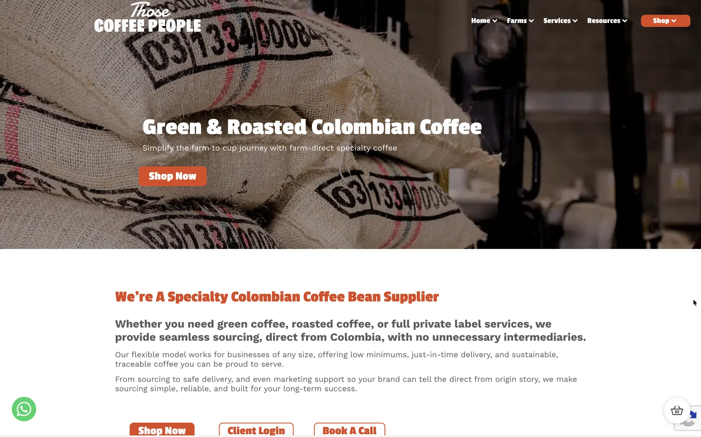

Criação da loja
Uma loja nova em Shopify ou WooCommerce, ou a reconstrução de uma que já não serve: estrutura do catálogo, coleções, páginas de produto e um checkout fácil de concluir.
Quer criar uma loja online em Portugal e vender com MB WAY, Multibanco e envios pelos CTT? Sou programador web freelance no Porto e faço a criação de lojas online em Shopify e WooCommerce, com tudo o que decide se uma loja vende: pagamentos, envios, páginas de produto, SEO e o acompanhamento que mostra que produtos dão realmente dinheiro.

Cada loja é diferente, mas estas quatro partes estão em quase todos os projetos.
Uma loja nova em Shopify ou WooCommerce, ou a reconstrução de uma que já não serve: estrutura do catálogo, coleções, páginas de produto e um checkout fácil de concluir.
MB WAY, Multibanco e cartão através de um fornecedor de pagamentos compatível, com testes reais antes do lançamento, para que nenhum cliente fique a meio da compra.
Zonas e tarifas de envio pelos CTT ou por transportadora, IVA bem configurado e faturação certificada através de uma app ou integração, como a lei portuguesa exige.
Páginas de coleção e de produto prontas para o Google, dados estruturados, um tema rápido e eventos de e-commerce no GA4, para ver as vendas por produto e por canal.
A Shopify é normalmente a opção mais simples: alojamento, segurança e atualizações estão incluídos, e funciona bem com uma equipa pequena. O WooCommerce corre em WordPress, por isso serve lojas com muito conteúdo ou que precisam de muita personalização, mas exige mais manutenção. Trabalho com as duas e recomendo a que encaixa no seu caso. Para trabalho só em Shopify, veja a página de programador Shopify.
Para além da criação de loja online de raiz, também trabalho em lojas que já existem: velocidade, funcionalidades que deixaram de funcionar, uma atualização de tema ou uma integração que nunca correu bem.
Trabalho com marcas que estão a abrir a primeira loja virtual e com negócios que já vendem e querem crescer. Quando é útil, reúno-me presencialmente com empresas do Porto, de Vila Nova de Gaia e arredores. Com empresas no resto do país e no estrangeiro, o trabalho é feito online.
Uma loja é mais do que um tema e alguns produtos. Antes do lançamento trato do que decide se a loja vende: uma estrutura de produtos que faça sentido para o catálogo, páginas de coleção com filtros, um checkout com os métodos de pagamento que os clientes esperam, regras de envio e impostos, os emails automáticos e as páginas legais. Depois, do que a deixa crescer: URLs e dados de produto pensados para o Google, eventos de e-commerce no GA4 e o pixel da Meta, se pensa anunciar.
Escrevi um guia sobre como criar uma loja online em Portugal e outro sobre a melhor plataforma para a criar.
Melhorei a velocidade para cerca de 65 em telemóvel e 92 em computador no PageSpeed, liguei a loja ao QuickBooks e corrigi links partidos e URLs errados.
Migrei uma loja de vestuário técnico de um tema Shopify 1.0 para Online Store 2.0, com páginas de produto e coleções reconstruídas como secções reutilizáveis.
Mudei uma loja de vestuário familiar para Online Store 2.0 e mapeei redirecionamentos para que os links antigos continuassem a funcionar.
Uma chamada gratuita de 20 minutos sobre o que vende, a quem e como envia.
Um orçamento fechado por escrito, com o âmbito e o que está incluído.
Crio a loja e testo pagamentos, envios e emails com encomendas de teste reais.
Lançamos quando estiver satisfeito, e continuo disponível para correções.
Escolhe-se a plataforma (normalmente Shopify ou WooCommerce), criam-se produtos e coleções, ligam-se pagamentos e envios, escrevem-se páginas de produto claras e testa-se o checkout com encomendas reais antes de lançar. Depois configura-se o SEO e o acompanhamento de vendas. Posso fazer tudo, ou só as partes que preferir não fazer.
Para além da loja em si, precisa de atividade aberta nas Finanças, de faturação certificada para as vendas online e de definir envios e devoluções. Confirme a parte fiscal com o seu contabilista; eu trato da loja e das integrações.
Ecommerce, ou comércio eletrónico, é vender produtos ou serviços online, com o pagamento, o stock, os envios e os emails das encomendas tratados pela plataforma da loja.
Depende da plataforma, do número de produtos, do design e das integrações. Depois de uma chamada gratuita envio um orçamento fechado. As mensalidades da plataforma, como um plano Shopify, são pagas à parte.
Sim. Muito do meu trabalho é em lojas existentes: velocidade, funcionalidades avariadas, atualização de tema ou integrações.
Depende sobretudo do número de produtos, de quão prontos estão os conteúdos e de quanto o design tem de ser feito à medida. Indico o prazo com o orçamento por escrito e aviso logo se alguma coisa do seu lado, como as fotografias dos produtos, pode atrasar.
Diga-me o que vende e para onde envia. Digo-lhe honestamente que plataforma e configuração usaria.